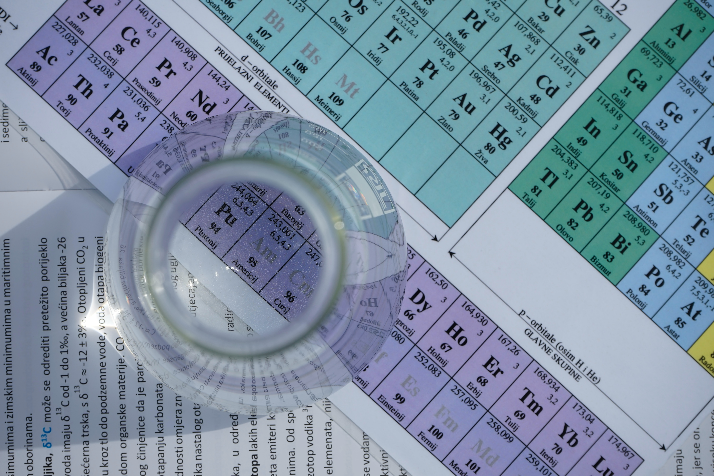
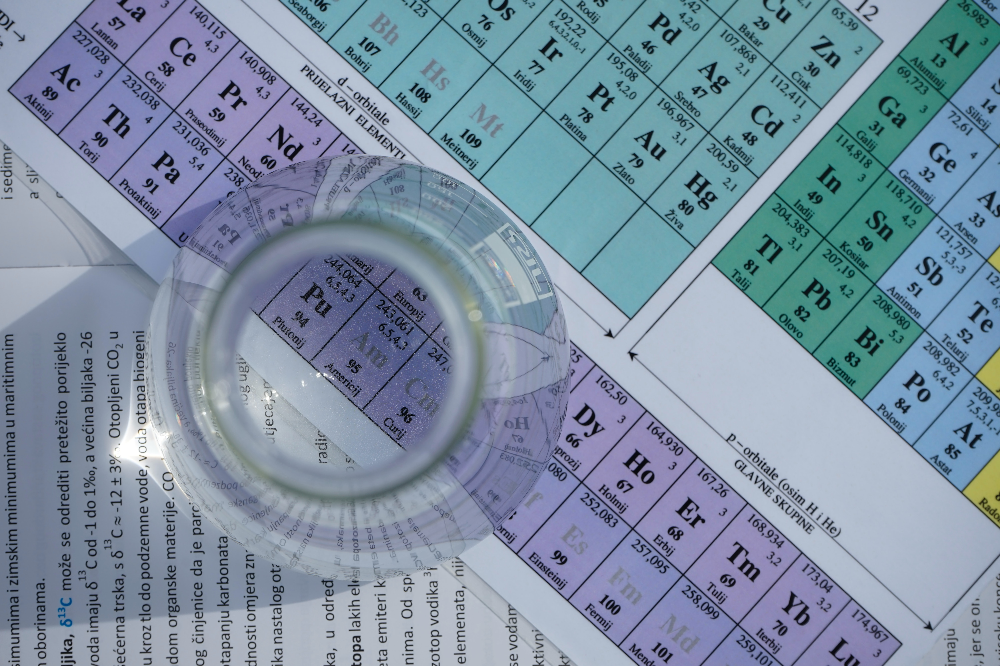

Ilmu Kimia
Kimia adalah cabang dari ilmu fisik yang mempelajari tentang susunan, struktur, sifat, dan perubahan materi. Ilmu kimia meliputi topik-topik seperti sifat-sifat atom, cara atom membentuk ikatan kimia untuk menghasilkan senyawa kimia, interaksi zat-zat melalui gaya antarmolekul yang menghasilkan sifat-sifat umum dari materi, dan interaksi antar zat melalui reaksi kimia untuk membentuk zat-zat yang berbeda.
 
